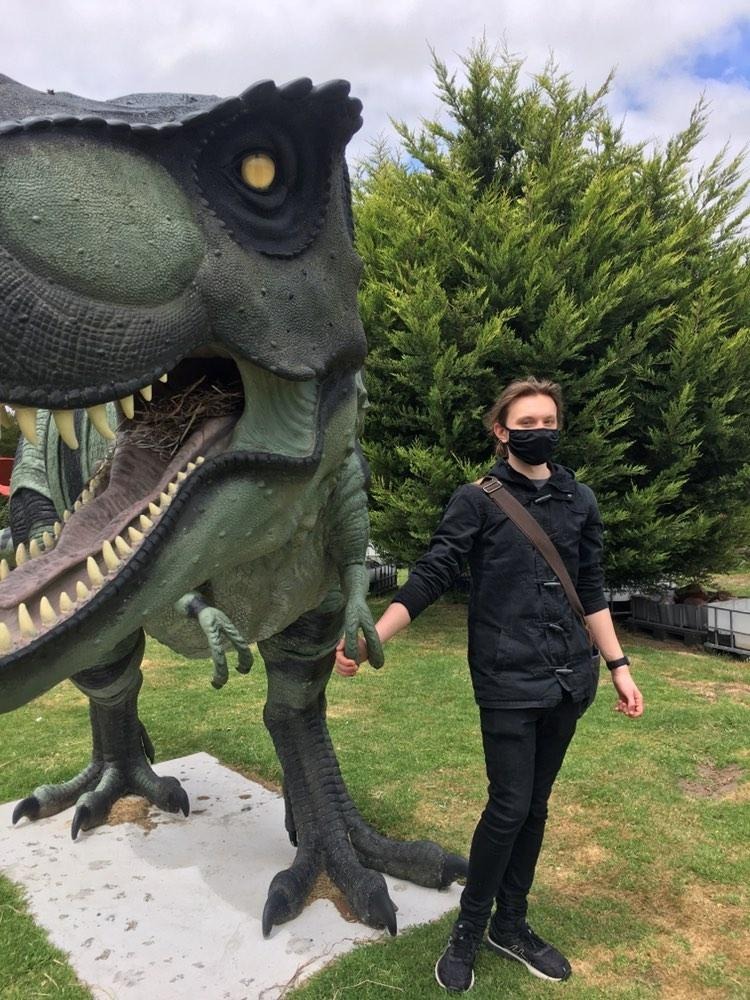

Name: Connor Jack O’Loughlin
Student ID: s3949499
Student email: s3949499@student.rmit.edu.au
Connor O'Loughlin E-Portfolio
Basic information
My name is Connor O’Loughlin. I have been living in Australia all my life however I just recently moved to Melbourne in order to not have to take a two and a half hour train ride every time I want to attend uni. My hobbies include playing way too many video games and watching tv series very occasionally. My favourite video game right now is of course Elden Ring which came out at a very inconvenient time due to my new circumstances having just moved and reduced time due to attending uni and going to work. Additional fact about myself I somehow make situations so much worse than they should with my luck and huge brain, for example I literally moved to melbourne like 4 days before uni started and still have no idea what I am doing. Additional example, I got covid literally the week this assignment was due like how do I keep doing this.
Interest in IT
What is your interest in IT? When did your interest in IT start?
My interest in IT started last year when I undertook my applied computing: software development class where I found coding and doing project tasks fun and interesting. It mostly continued as I didn’t really have many other dream job types of interests and IT just has a lot of convenience via being able to work from home as well as the industry mostly constantly expanding so there’s no danger of it collapsing underneath me.
Was there a particular event or person that sparked your interest?
I can’t really remember whether or not a particular event sparked my interest. My interest in IT mostly gradually happened over time when doing class projects with friends for my applied computing class.
IT experience
My only It experience stems from doing a few classes throughout the years which have taught me basic design concepts like the different stages such as analysis and development as well as having very surface level knowledge and skills when it comes to python as that is the coding language that was chosen to be used at my school.
Why choose RMIT?
I chose rmit as I believed it to be one of the better universities for getting into work after the degree ends as well as the name “royal melbourne institute of technology” really sells it when you’re going into a technology based degree.
What do you expect to learn?
I expect and hope to learn more about artificial intelligence, get better at using python more proficiently and learn more about user centred design because that’s has been pretty fun so far.
